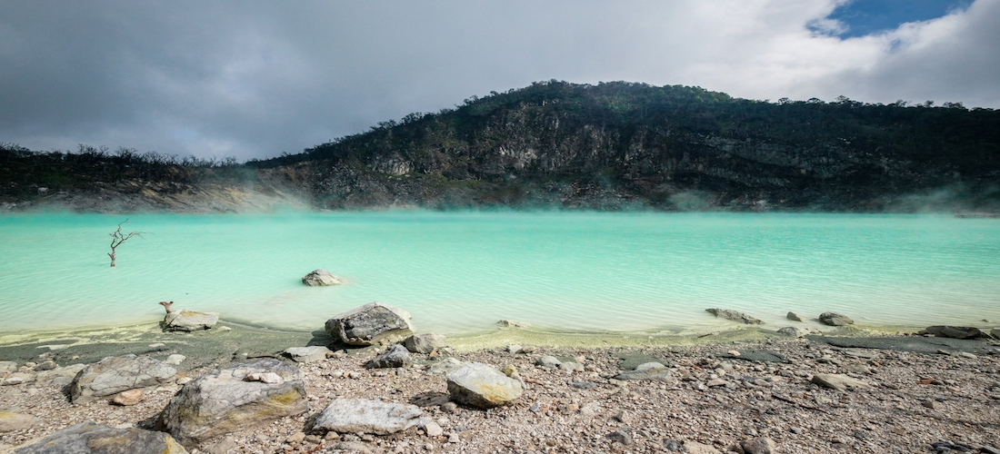
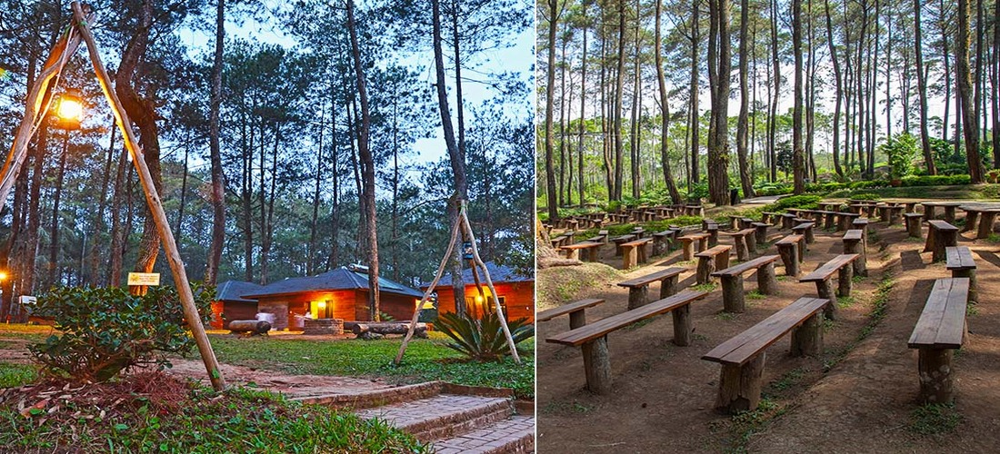
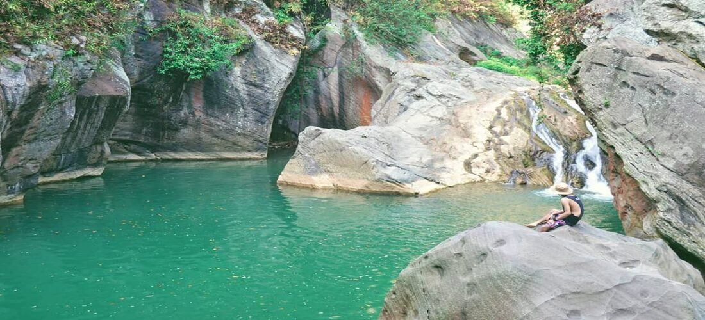
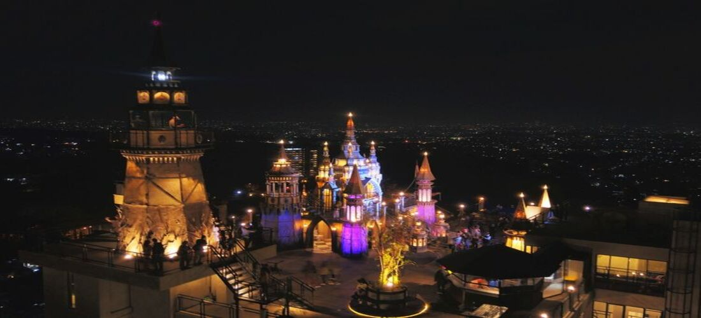
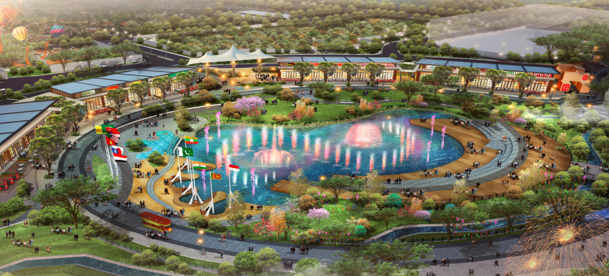

inilah beberapa tempat wisata yang ada di daerah bandung
OlehRizal Sultan Purnama
24 December 2022
1. kawah putih (white crater)

Image From Google : Kawah Putih
Menurut Wikipedia Kawah Putih adalah sebuah
tempat wisata di Jawa Barat yang terletak di Desa Alam Endah, Kecamatan Rancabali, Kabupaten Bandung
Jawa Barat yang terletak di kaki Gunung Patuha. Kawah putih merupakan sebuah danau yang terbentuk
dari letusan Gunung Patuha. Tanah yang bercampur belerang di sekitar kawah ini berwarna putih, lalu
warna air yang berada di kawah ini berwarna putih kehijauan, yang unik dari kawah ini adalah airnya
kadang berubah warna.
Danau Kawah Putih sendiri berada pada ketinggian 2194 m tapi luas total Danau
Kawah Putih 25 ha yang dipakai wisata 5 ha dan lokasi kawah sendiri 3 ha.
Perairannya yang berwarna biru kristal berubah dengan kondisi cuaca, dan dilapisi dengan pasir putih
halus, memberikan pengunjung pengalaman dunia lain.
2. Orchid Forest Cikole

Image From Google : Orchid Forest Cikole
Yang ini juga tidak kalah menarik yaitu Orchid Forest Cikole, lokasi nya berada di
di Genteng, Desa Cikole, Lembang, Kabupaten Bandung Barat, Jawa Barat. Tempat ini merupakan taman
anggrek terluas di Indonesia sehingga Orchid Forest Cikole Bandung memfokuskan diri untuk
memperkenalkan dan membudidayakan berbagai tanaman anggrek. Menggunakan metode lokal maupun
internasional. Dan spesies anggrek nya tidak hanya berasal dari Indonesia saja loh,
ada yang berasal dari Venezuela, Argentina, Filipina, Peru, dan Amerika serikat.
Bukan hanya itu saja di Orchid Forest Cikole terdapat jajaran pohon pinus yang akan menemani
setiap langkah pengunjung. Dan kita dapat berjalan di Wooden Brige, jembatan kayu sepanjang 125
meter yang menggantung di atas ketinggian sekitar 23 meter. Sehingga kita bisa melihat keindahan nya
dari atas apalagi di saat malam para pengunjung akan di manjakan mata nya dengan banyak nya lampu
yang menerangi setiap spot.
3. Sanghyang Heuleut

Image From Google : Sanghyang Heuleut
Menurut badan penghubung
jabarprov Sanghyang Heuleut sendiri merupakan sebuah danau kecil yang dikelilingi oleh
kawasan berbatuan yang berbukit. Inilah yang menyebabkan kawasan wisata alam ini seakan tersembunyi
dari masyarakat luar. Keindahan Sanghyang Heuleut ini tidak hanya sebatas
pada danau yang dikelilingi oleh tebing bebatuan yang seakan melindungi danau tersebut dari dunia
luar. Keindahan Sanghyang Heuleut juga dilengkapi dengan adanya tatanan pepohonan rimbun yang
memberi keteduhan sekaligus melukiskan keindahan danau. Bahkan, air terjun yang menjadi sumber
pengairan danau tersebut juga mempercantik lukisan Tuhan di kawasan alam Bandung tersebut.
Dan konon katanya Sanghyang Heuleut ini, adalah kolam alam yang sudah terbentuk sejak jaman
prasejarah. Bahkan ada legenda yang menyebut kalau kolam ini sejatinya merupakan tempat pemandian
para bidadari dari kayangan!. Tapi perlu diketahui ya kalau lokasinya memang cukup jauh dari pusat
kota - hingga hampir 2 jam dengan mobil! Kamu juga harus hiking lagi dari parkiran untuk bisa sampai
area laguna.
4. Mercusuar Cafe & Resto

Image From Google : Mercusuar Cafe & Resto
Tempat wisata ini terletak di Jl. Lembah Pakar Timur 2 No.7, Ciburial, Kec. Cimenyan, Kabupaten
Bandung, Jawa Barat. tempat wisata yang satu ini bertemakan abad pertengahan cocok untuk kalian yang
ingin makan atau nongkrong dengan suasana yang seperti di abad Medieval Castle, Dan banyak juga yang
mengatakan bahwa Cafe & Resto ini mirip dengan Castle Hogwarts yang ada di serial film Harry Poter.
Bukan hanya itu tempat wisata yang satu ini terdapat 6 lantai sehingga pengunjung yang berada di
rofftop atau lantai enam ini bisa melihat pemandangan bandung yang indah sehingga digemari oleh
pengunjung dari segala usia. Lantai dasar dari bangunan ini juga memiliki sebuah bakery, selain
lantai 6 dan lantai 1 pengunjung juga dapat menikmati hidangan lainnya di berbagai lantai.
5. Kiara Artha Park

Image From Google : Kiara Artha Park
Didalam wisata yang satu ini terdapat sebuah air mancur menari yang dikendalikan oleh sebuah mesin
dan
dihiasi dengan sebuah lampu yang warna warni, sehingga pengunjung yang melihat nya akan dimanjakan
oleh pemandangan air mancur tersebut. Lokasi nya berada di Jalan Banten, Kelurahan Kebonwaru,
Kecamatan Batununggal, Kota Bandung, Jawa Barat.
Tempat wisata ini akan lebih seru lagi ketika dikunjungi di malam hari, karena pada malam hari
pengunjung akan disuguhkan berbagai permainan seperti trampolin, pipa climbing, perosotan, wall
climbing, dan ninja warrior. Tetapi pengunjung harus membeli tiket khusus untuk menikmati permainan
tersebut dan dilarang membawa makanan atau minuman dari luar, untuk pengunjung yang ingin berjoging
atau bersepeda disediakan tempat yang dapat digunakan selama 24 jam secara gratis.
Berikut beberapa wisata yang ada di
bandung, jika ingin mengetahui lebih banyak lagi tentang wisata yang ada di bandung atau di wilayah
lainnya jangan lupa klik iklan nya 😁 agar saya lebih bersemangat lagi untuk membuat sebuah
artikelnya. terima kasih 😉